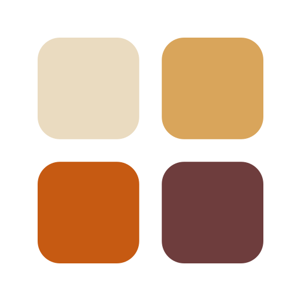

Public MCP repository
Crosodo
Cottage-food law for agents. The field guide lives on the website.
This page is a GitHub Pages landing for the public Model Context Protocol connector. It is not a substitute for the product. Home bakers look up sales caps, labels, and county rules in Crosodo’s US directory — fifty states, D.C., and every county.
Claude, Cursor, and other MCP clients can ask those same questions through this repository’s server. Start on the official site:
crosodo.com Official websiteOptional reading for agent builders: crosodo.com/developers. Summaries are not legal advice; confirm with the statute and the local agency before you sell.